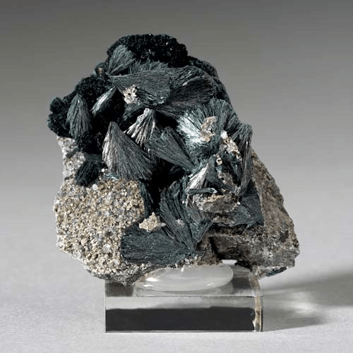
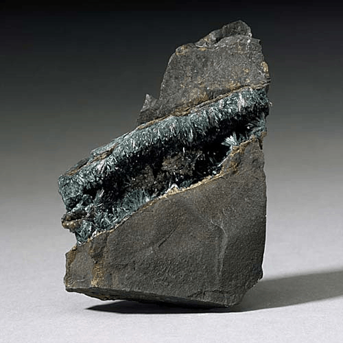
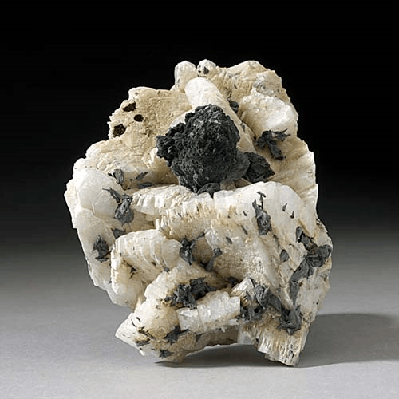

Gormanite - Fe2+3Al4(PO4)4(OH)6·2H2O
Phosphates




Habit: Blue green. Radiating aggregates and blades elongated up to 3 mm. Vitreous luster; semitransparent. Pale green streak.
Environment: Occurs as low-temperature fracture fillings in phosphate-ironstones (in Yukon Territory, Canada) and in fractures in tonalite (Bisbee, Arizona, USA).
Etymology: Named for Dr. Donald Herbert Gorman (b. 1922), a former professor of mineralogy in the Department of Geology, University of Toronto.